Earned is a goal tracker where rewards unlock only when two things are true: you can afford the reward, and you have earned it through measurable progress.
Reward gates: savings and EXP
Core views: Today, Goals, Rewards, Trophies
Hosted Supabase migrations through V1
Free-tier infrastructure target
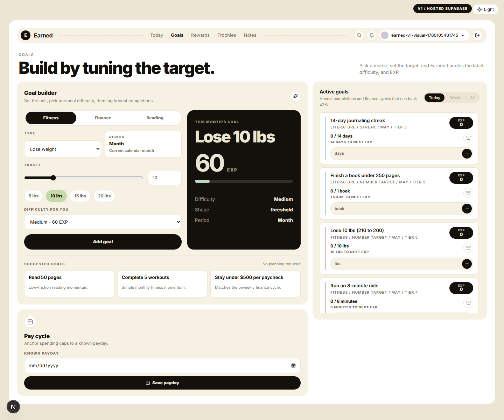
The problem
Most goal apps track activity. Most budget apps track money. Earned sits in the emotional gap between the two: sometimes you can technically buy something, but it still does not feel earned.
The product challenge was to make self-reward feel intentional without becoming punitive, over-gamified, or spreadsheet-heavy. The user needed a daily system that could answer one question quickly: what is my effort earning right now?
What I built
I shipped a V1 web app with auth, user-owned data, guided goal creation, reward focus switching, savings snapshots, EXP banking, claim logic, and a trophy archive.
- Today dashboard for active goals, recent EXP, consistency, and the focused reward.
- Goal builder with Fitness, Finance, and Reading pillars plus personal-difficulty EXP.
- Rewards workspace where savings handles affordability and EXP handles whether the reward was earned.
- Trophy room that preserves claim history, including price and EXP at claim time.
- Atomic Supabase RPCs for the core multi-write flows so progress, banking, claims, focus switching, and undo stay consistent.
Moodboarding
The moodboard pushed the product toward calm accountability: warm cream surfaces, soft cards, dark ink action areas, and pastel category color. I wanted it to feel more like a focused personal dashboard than a finance app or a fantasy game.
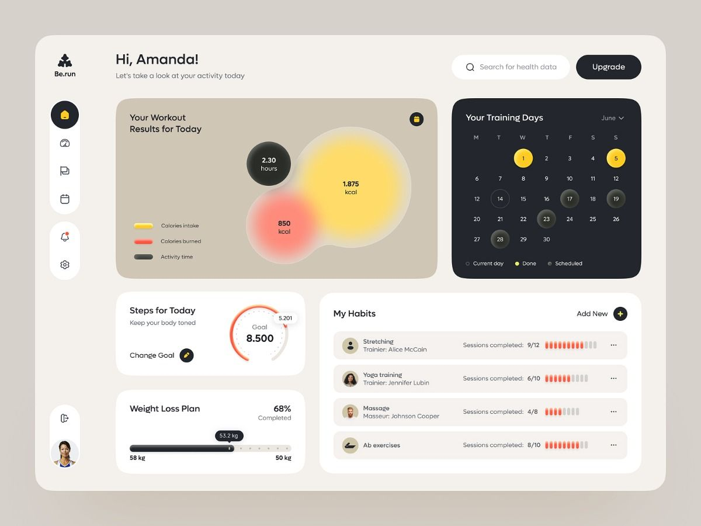
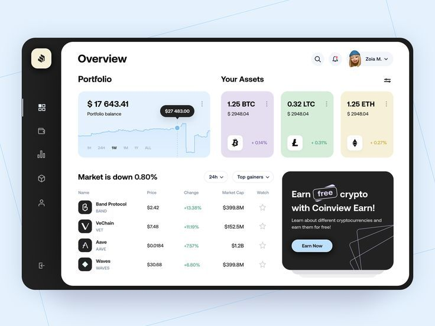
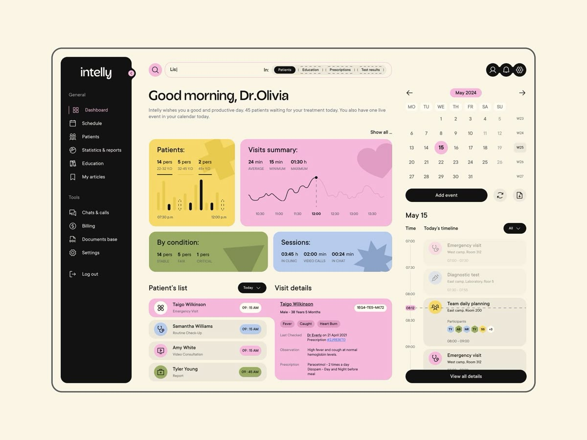
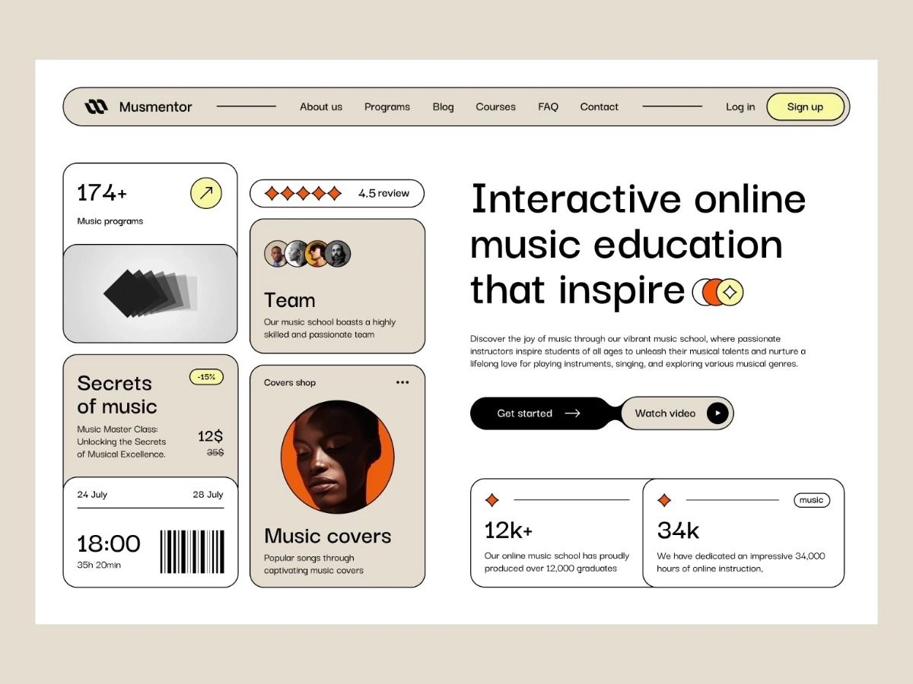
Prototype path
I explored multiple visual directions before locking the combined v2 direction: warm canvas, quiet navigation, soft data surfaces, and a dark active reward card that gives the product its center of gravity.
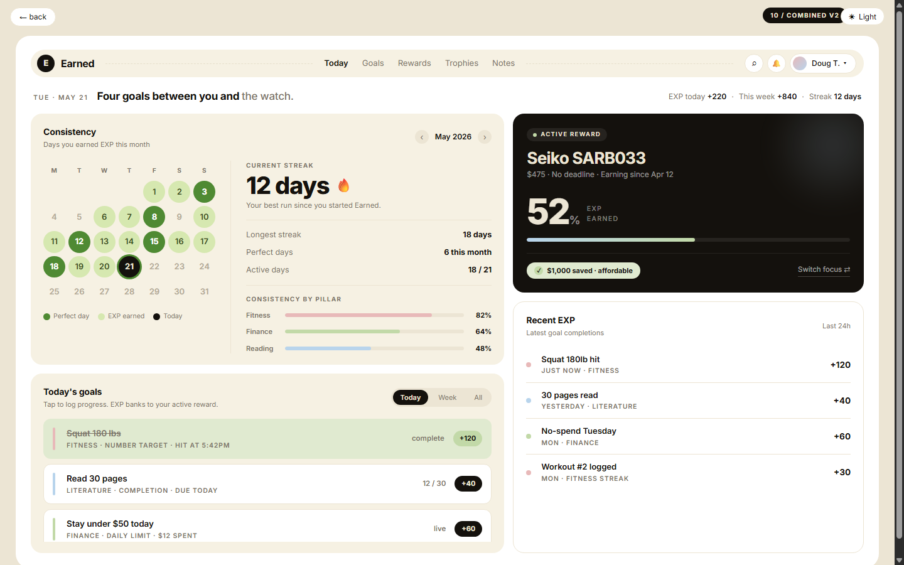
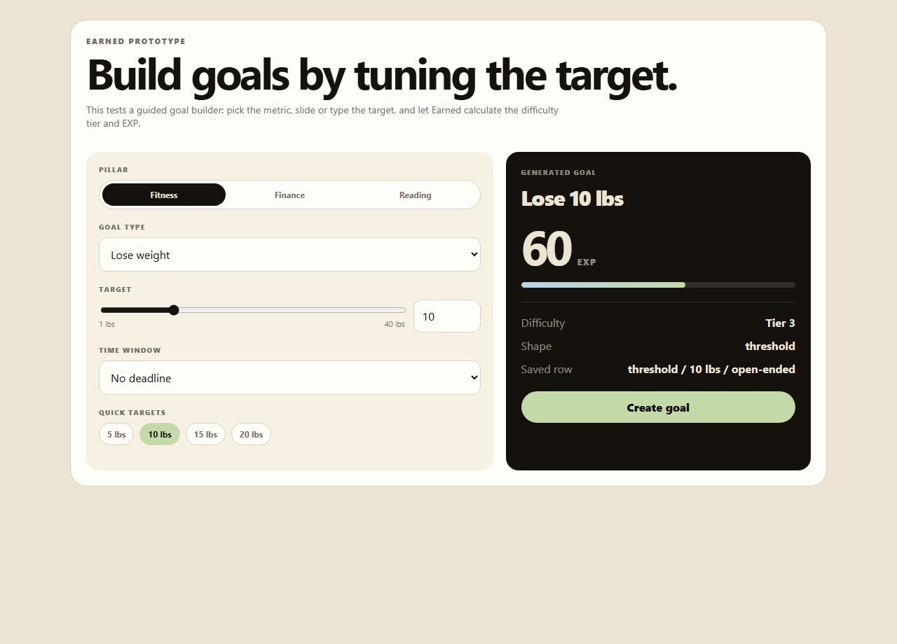
Goal builder prototype
The builder started as a guided target-tuning tool. The important idea survived into the app: users should define the unit of effort, then see the EXP impact before adding the goal.
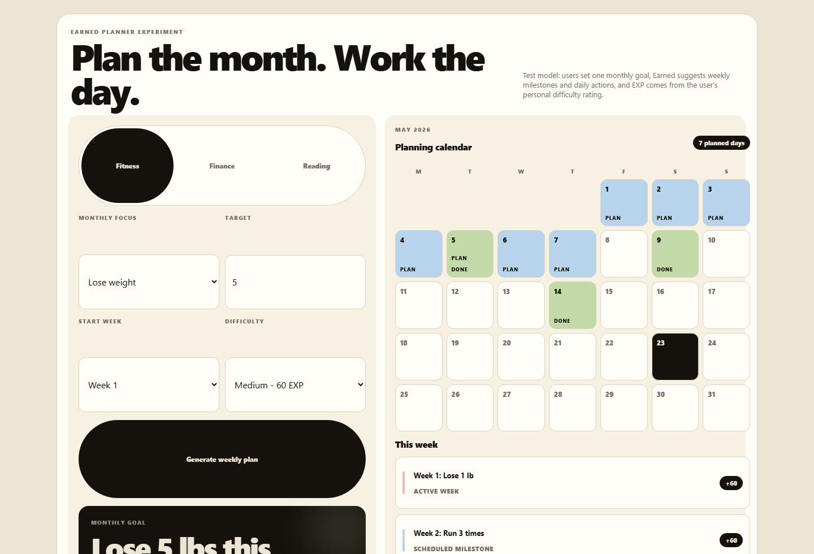
Planner experiment
I tested a calendar-first planner model, then removed it from V1. It had a stronger planning story, but too much up-front friction for a daily self-accountability tool.
Obstacles and fixes
The hardest parts were not visual. They were product mechanics: how to make the system fair, honest, and resilient when progress, money, and rewards all affect each other.
EXP fairness
Early overlapping goals could overpay EXP. I first tested metric caps and progress baselines, but real-use QA showed they punished honest extra effort. The fix was simpler: one completion unit, one personal difficulty rating, repeatable EXP when the user crosses full units.
Payday drift
Finance goals originally allowed generic windows, which could drift away from a real biweekly paycheck cycle after closing a period. The fix was a known payday anchor that realigns spending caps to 14-day cycles.
Partial writes
Progress logging, EXP banking, reward claims, focus switching, archiving, and undo all touch multiple tables. I moved the risky flows into Postgres RPCs so each operation succeeds or fails as one unit.
Responsive density
The first Goals layout was too dense and some lists clipped. I moved creation into its own Goals workspace, added scroll boundaries, and fixed mobile/tablet media rules after screenshot QA.
The system model
EXP is not a shared wallet. It banks into the active reward, and switching focus preserves each reward's progress. This made the interaction feel more intentional: choosing a focus decides what today's effort counts toward.
Final product QA
The V1 QA loop used a hosted Supabase project and a disposable authenticated account. I tested auth bootstrap, repeated goal completions, payday alignment, finance close, undo, savings snapshots, reward focus switching, reward claim, trophy archive, goal and reward archiving, dashboard summaries, mobile dark mode, and sign out.
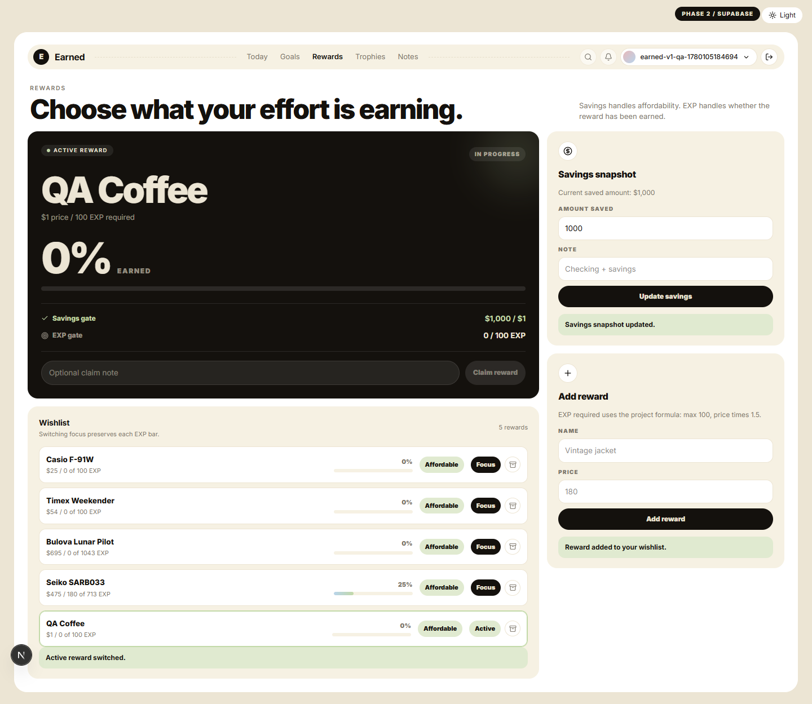
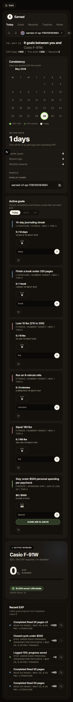
Outcome
Earned reached a complete, verified V1: private GitHub repo, hosted Supabase schema through migration 0016, generated database types, magic-link auth, real user-owned data, and the full reward loop working end to end.
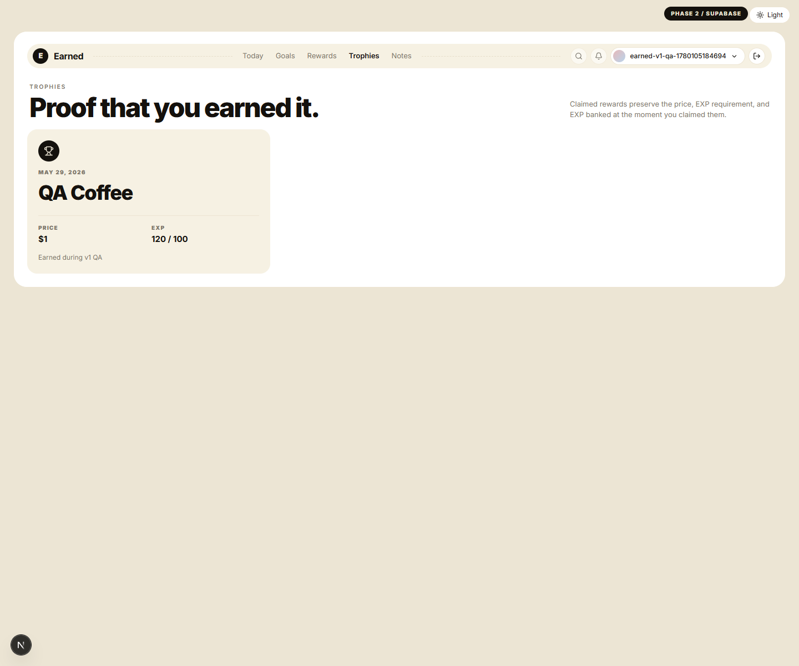
Verification passed with lint, typecheck, build, and hosted migration checks. The next product checkpoint is deployment and a short real-use pass with my own account, followed by claim celebration motion and richer history views.